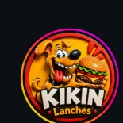

Só WhatsApp
- Cliente pergunta preço e itens no chat
- Pedidos se misturam em alto volume
- Sem vitrine própria com a cara do Kikin
- Link do bio leva direto ao Zap

Kikin Lanches PropostaProposta por JVSEKI Dev · jvsekidev.com.br
“Seu negócio de Andradina no celular do cliente”
Mais de 13 anos abertos, cerca de 4 mil seguidores no Instagram — e o pedido ainda depende só do WhatsApp. Esta proposta entrega a estrutura do site do Kikin: vitrine com a cara da marca e pedido organizado.
No Instagram o CTA é “Peça pelo WhatsApp” — sem cardápio digital próprio. A marca é forte; o canal de pedido pode acompanhar.
Valor fechado da estrutura. Servidor e domínio ficam na conta da empresa; a JVSEKI cuida da estrutura e da manutenção do sistema.
R$ 2.000 pagamento total
50% de entrada (R$ 1.000) agora + 50% restante (R$ 1.000) no outro mês
Cálculo: metade de R$ 2.000 = R$ 1.000 de entrada. O outro R$ 1.000 fica para o mês seguinte.
| Item | O que inclui | Valor |
|---|---|---|
| Estrutura do site | Desenvolvimento e publicação da estrutura — JVSEKI | R$ 2.000 |
| Servidor + domínio | VPS + domínio — pago e em nome da empresa | Por conta da empresa |
| Manutenção JVSEKI | Suporte, bugs, estabilidade do sistema (não inclui remodelação) | R$ 200/mês |
| Função / remodelação nova | Layout novo, módulo extra, mudança grande de fluxo, etc. | Orçamento à parte |
Empresa: servidor e domínio.
JVSEKI: estrutura do site (R$ 2.000) e manutenção mensal (R$ 200).
Remodelar layout, criar funções novas ou mudar fluxo grande — isso vira orçamento separado.
Do clique do cliente até o pedido chegar na operação do Kikin.
Vitrine rápida — o pedido segue o fluxo combinado com a loja.
Marca no centro — menos pergunta solta no chat, mais pedido claro.
Exemplos reais do mesmo tipo de produto. Abra no celular — a cara do Kikin entra depois do fechamento.
Vitrine com categorias, busca e pedido no WhatsApp.
Abrir demo catálogoAbre rápido — sem aviso de servidor adormecido.
Cardápio, carrinho, pagamento e painel.
Abrir demo deliveryNa 1ª abertura o servidor gratuito pode demorar cerca de 30 a 60 segundos — espere e atualize se precisar.
Informações públicas usadas nesta proposta — confirmamos tudo no fechamento.
Rua Goiás, 2165 — centro
Andradina/SP
(18) 3723-7553
@kikin.lanches
Segunda a Domingo
18:30 – 23:30
+ de 13 anos abertos
Como fica depois do fechamento — domínio e servidor por conta da empresa.
Empresa compra (ex.: kikinlanches.com.br) e ativa HTTPS (cadeado).
VPS em nome da empresa. JVSEKI configura a estrutura.
R$ 200/mês — suporte, bugs e estabilidade do sistema.
“Seu negócio de Andradina no celular do cliente”
Estrutura do site por R$ 2.000 — entrada de R$ 1.000 e o restante no outro mês. Manutenção R$ 200/mês. Domínio e servidor por conta da empresa. Sistema por JVSEKI Dev.
WhatsApp (18) 99764-0335